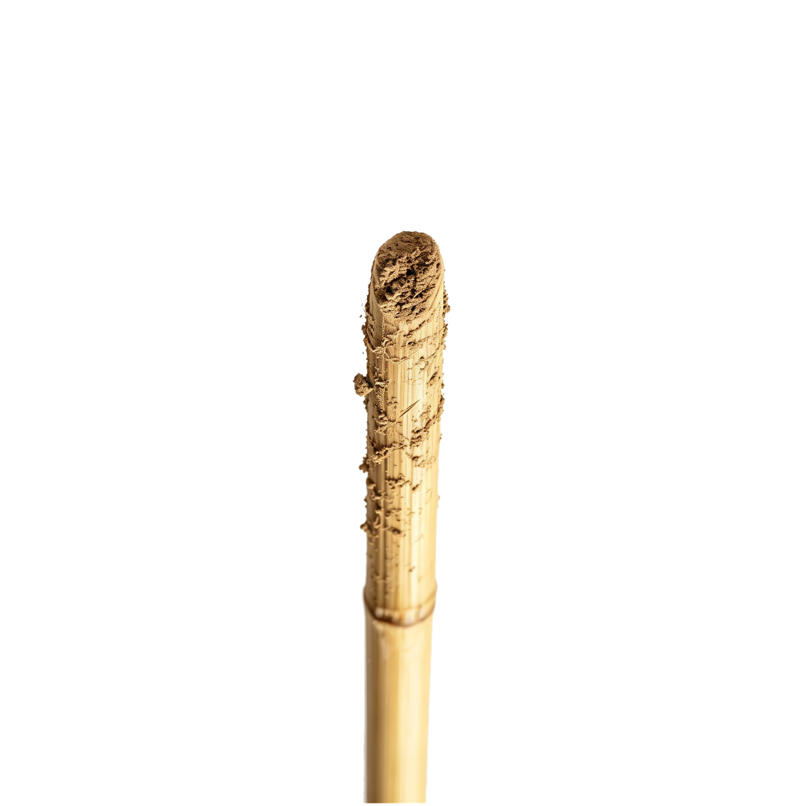
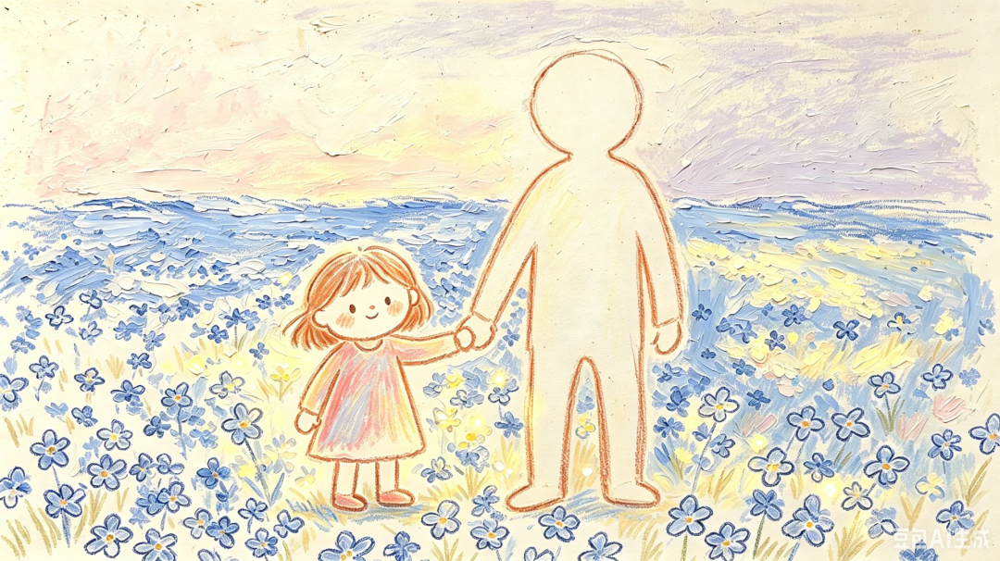
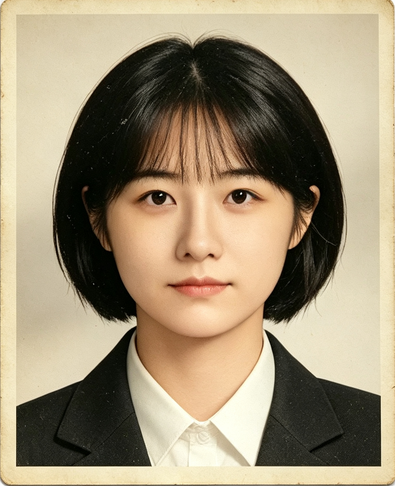
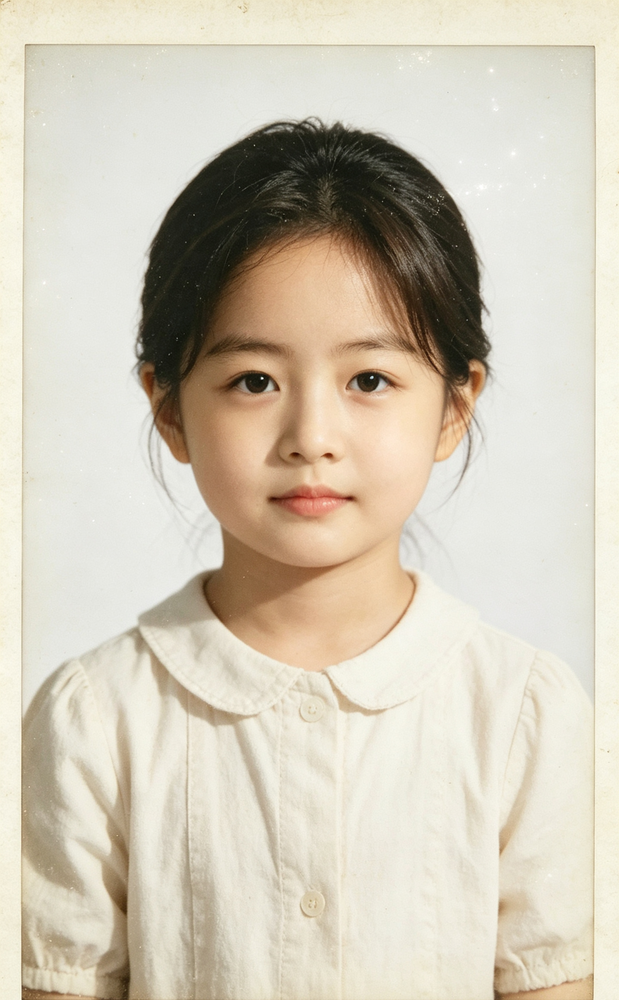
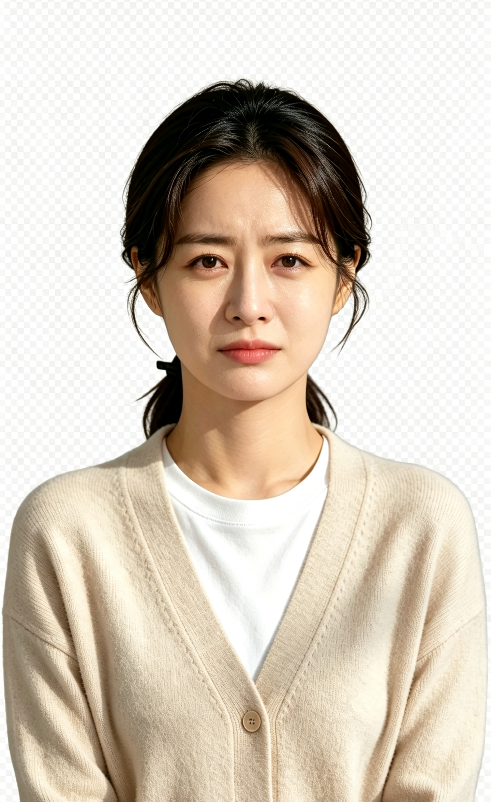
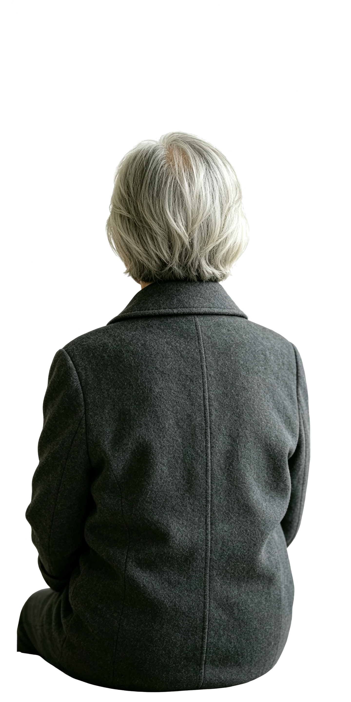

勿忘我
赵奶奶篇
《勿忘我》是一款以阿尔兹海默症患者真实视角为核心的交互式叙事游戏。
场景"时光驿站"以上海杨浦区殷行街道真实存在的认知症友好空间为原型。赵奶奶的故事融合了植物育种领域女性科研工作者群体的影子。
游戏试图让玩家进入认知症患者眼中的世界——你看到的不一定是真的，你需要自己判断什么是事实，什么是记忆错乱。
这不是一个"关怀老人"的故事。
这是一个关于"被看见"的故事。



| 日期 | 陪护老人 | 登记人 | 登记身份 | 当日照料记录 |
|---|---|---|---|---|
| 2024.02.26 - 2024.02.29 | 王德顺 | 张小林 | 护工 | 晨间喂药、协助散步、整理床铺 |
| 2024.03.01 - 2024.03.15 | 赵秀兰 | 张小林 | 家属 护工 | 日常喂药、修剪勿忘我盆栽、陪伴聊天 |
| 2024.03.16 - 2024.03.20 | 李桂芳 | 张小林 | 护工 | 量血压、记录睡眠、陪同用餐 |


